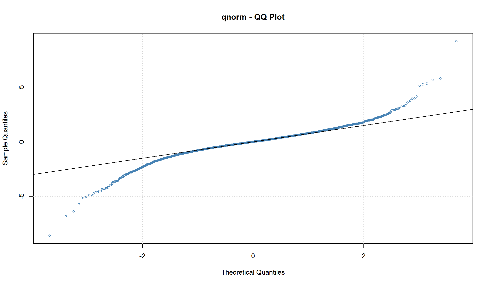
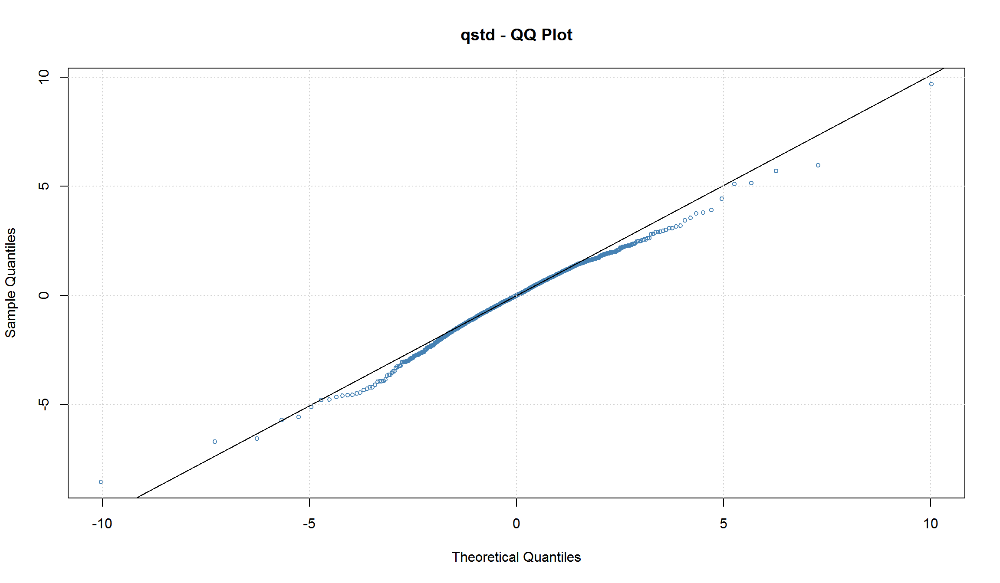
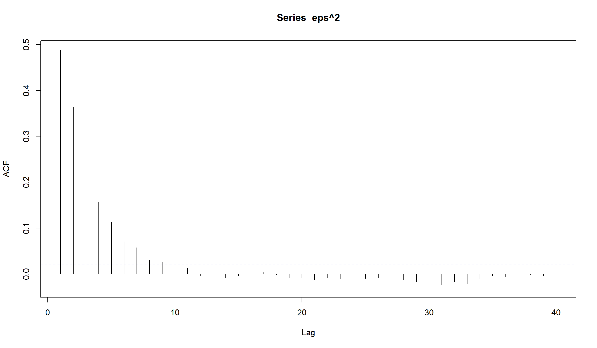
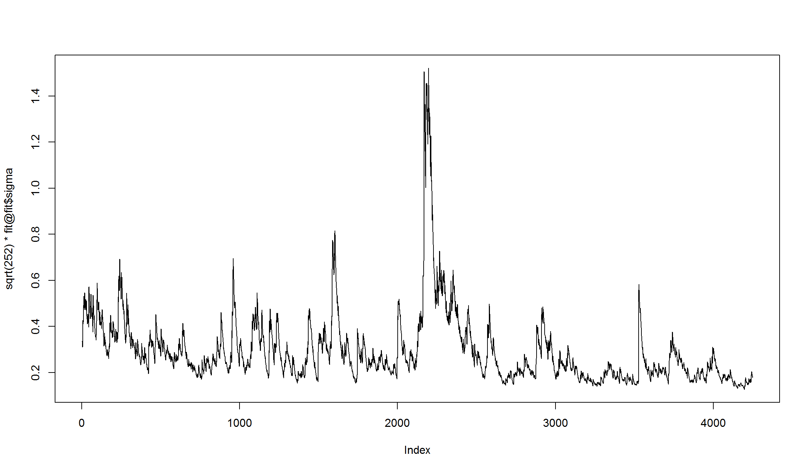
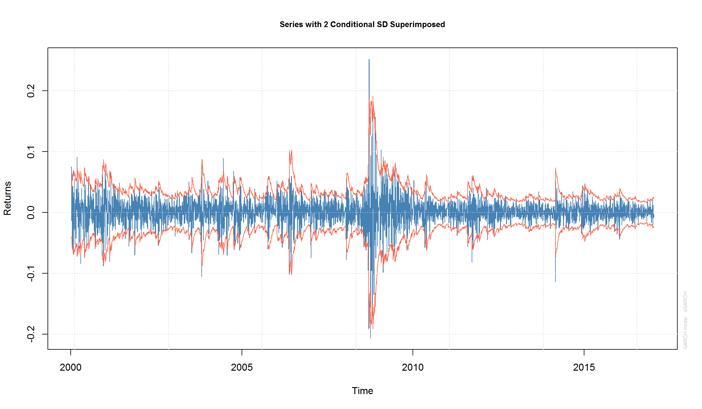
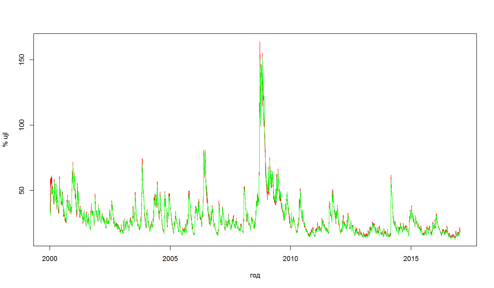
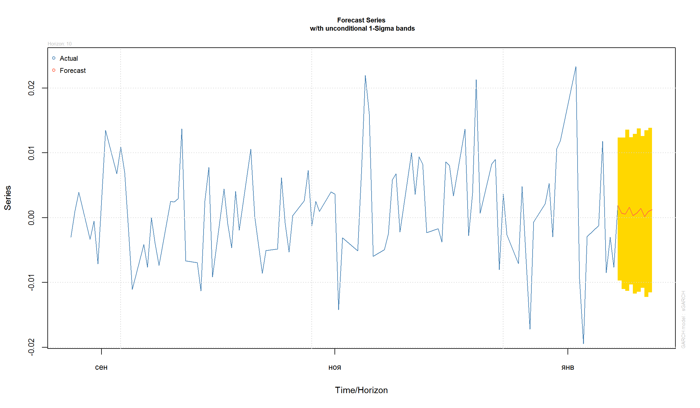
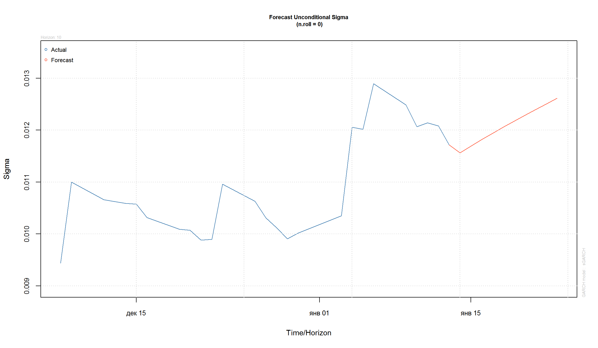

ARCH/GARCH модели
“Количественные финансы”
Салихов Марсель (marcel.salikhov@gmail.com)
2017-01-17
Цели лекции
- понять, что такое волатильность и как ее можно оценивать
- понять основные принципы моделей авторегрессионной условной гетероскедастичности (ARCH)
- научиться тестировать “ARCH-эффект” в R
- научиться симулировать ARCH-модели
- научиться оценивать ARCH-модели на финансовых данных в R c помощью пакетов fGarch и rugarch
- понять отличия ARCH и GARCH моделей
- научиться строить прогнозы для GARCH моделей
Выводы по ARMA-моделям
Напоминание из прошлой лекции:
- Мы используем PACF для определения примерного порядка AR-моделей (последний значимый лаг на PACF определяет порядок модели - \(p\))
- Мы используем ACF для определения ориентировочного порядка MA-моделей (последний значимый лаг на АСF определяет порядок модели - \(q\)).
- Информационные критерии (AIC, BIC) часто используются для выбора оптимальной модели ARMA. Эти критерии “штрафуют” модели за сложность (количество оцениваемых параметров)
- ARMA модели позволяют использовать меньше параметров, чем AR или MA по отдельности
- Все ARMA модели не позволяют моделировать меняющуюся во времени волатильность. Поэтому они в принципе не могут моделировать кластеризацию волатильности. В ARMA моделях условная дисперсия является постоянной.
Волатильность
- Волатильность – важное понятие в финансах, так как является синонимом понятия риск.
- Волатильность не наблюдаема. Поэтому мы используем различные прокси для оценки волатильности.
- Волатильность имеет широкое использование в различных приложениях:
- Ценообразование опционов. В модели Black-Scholes стоимость опционов зависит напрямую от волатильности базового актива.
- Риск-менеджмент. Волатильность используется при расчете показателей VaR (Value at Risk), ES (Expected Shortfall), показателя Шарпа (Sharpe Ratio) и других стандартных параметров риск-менеджмента.
- Торгуемые финансовые инструменты. Волатильность можно торговать напрямую (к примеру, фьючерсы VIX и связанные с ними ETF), но все еще экзотика для России (на Московской Бирже торгуются фьючерcы на индексы волатильности RVI).
Итог: если мы умеем прогнозировать волатильность, то мы можем более аккуратно оценивать стоимость опционов, создавать более продвинутые системы риск-менеджмента и можем создавать стратегии для торговли волатильностью.
Условная гетероскедастичность (CH)
- Мы говорим, что набор элементов (к примеру, части временного ряда) является гетероскедастичным, если определенные подгруппы этих элементов имеют разную дисперсию.
К примеру, если нестационарный временной ряд имеет выраженную сезонность или устойчивый тренд, то дисперсия ряда изменяется вместе с сезонностью или трендом. Такая регулярность приводит к гетероскедастичности ряда. Почему?
Однако структура рынка и поведение участников приводит к дополнительным причинам, почему увеличение дисперсии приводит к еще большему увеличению дисперсии в реальной жизни. К примеру, если большое количество участников использует стратегию “защиты” портфеля от снижения стоимости, то падение рынка приводит к автоматическим продажам и росту спросу на инструменты “защиты” (опционы) – то есть, к росту волатильности.
- Если гетероскедастичность имеет автокорреляцию, то есть условна в зависимости от периода роста волатильности, тогда наблюдается условная гетероскедастичность.
Волатильность для акций
Пусть мы оцениваем волатильность акций Роснефти. Мы можем оценить волатильность по разным данным: 1) дневная доходность акций за каждый торговый день 2) внутридневная динамика торгов 3) стоимость опционов на акции Роснефти (если они есть). Эти три источника дают три возможных оценки волатильности:
- Волатильность как условное стандартное отклонение ежедневных доходностей. Это стандартное определение волатильности, которое мы будем использовать сегодня.
- Подразумевая волатильность (implied volatility). Используя рыночные цены опционов и одну из моделей ценообразования опционов (к примеру, Black-Scholes), мы можем оценить волатильность. Однако это оценка зависит от модели, которую вы используете для определения цены опциона.
- Реализованная волатильность. Если у вас есть high frequency данные, вы можете оценивать внутридневную волатильность доходностей. К примеру, вы можете использовать, 5 минутные промежутки времени, для того, чтобы оценить дневную волатильность.
Обычно волатильность сообщается на годовом уровне (% в год). Если вы оценили дневную волатильность, то вы можете оценить годовую волатильность, умножим ее на \(\sqrt{252}\), то есть квадратный корень из количества торговых дней в году (примерно равно 16)
Идентификация условной гетероскедастичности
- Эффект условной гетероскедастичности сложно оценить по корелограммам.
- Можно использовать модели волатильности, такие как ARCH или GARCH.
plot.xts(MICEX.rtn, type = 'l',main = 'Доходность индекса ММВБ')

t.test(MICEX.rtn) # тестируем среднее доходнстей
One Sample t-test
data: MICEX.rtn
t = 1.8344, df = 4249, p-value = 0.06666
alternative hypothesis: true mean is not equal to 0
95 percent confidence interval:
-0.0000409118 0.0012312515
sample estimates:
mean of x
0.0005951699
Cудя по t-тесту, мы отклоняем гипотезу о том, что среднее доходности равно 0.
AutoRegressive Conditional Heteroskedastic (ARCH) модель
- Мы знаем, что модели ARMA не позволяют моделировать CH-эффект. Однако почему не попробовать моделировать ** условную дисперсию** серии с помощью модели ARMA? Это и есть базовый принцип ARCH.
Пусть временной ряд \({\epsilon_t}\) имеет следующий вид:
\[ \epsilon_t = \sigma_t w_t \] где \(w_t\) – белый шум с нулевым средним и единичной дисперсией (белый шум может иметь нормальное распределение, но это не обязательно, распределение может быть и иным).Часть \(\sigma_t\) – условная дисперсия (conditional variance), она имеет вид:
\[\sigma_t^2 = a_0 + a_1 \epsilon_{t-1}^2 \] \(a_0\) и \(a_1\) – это параметры модели, которые необходимо оценить.
Условная дисперсия ряда по определению равно \(\sigma_t^2 = Var(\epsilon_t | e_{t-1}, \ldots)\) ;
В этом случае ряд \({\epsilon_t}\) является процессом ARCH(1). Можно записать модель в следующем виде:
\[\epsilon_t = w_t \sqrt{a_0 + a_1 \epsilon_{t-1}^2} \] \(a_0 >0\) и \(a_1 > 0\) для того, чтобы часть под корнем была больше 0.
\(a_0 + a_1<1\) для того, чтобы ряд оставался стационарным с конечной дисперсией.
Почему ARCH моделирует волатильность?
Немного математики:
\[ Var(\epsilon_t) = E[\epsilon_t^2] - (E[\epsilon_t])^2 = E[\epsilon_t^2] =E[w_t^2]E[a_0 + a_1 \epsilon_{t-1}^2]= \] \[=E[a_0 + a_1 \epsilon_{t-1}^2] = a_0 + a_1 Var(\epsilon_{t-1}) = a_0 + a_1 \epsilon_{t-1}^2 \]
учитывая, что среднее \(w_t\) равно 0, дисперсия – 1, а $E[_t] = 0 $
- Дисперсия ARCH(1) модели является AR(1)-процессом.
Когда можно использовать ARCH?
- Мы использовали корелограмму доходностей для идентификации AR(1)-процесса. Точно также можно использовать корелограмму квадратов доходностей для идентификации ARCH
- ARCH необходимо использовать, если вы уже подобрали адекватную модель, которая “оставляет” после себя остатки, более или менее похожие на белый шум. То есть, сначала необходимо определить модель для среднего доходностей, а потом моделировать дисперсию.
- ARCH не имеет смысла использовать для серий, которые имеют сезонные и/или трендовые эффекты. Сначала “уберите” сезонность/тренд с помощью ARIMA (SARIMA), экзогенных регрессоров, а после этого оценивайте ARCH.
Достоинства и недостатки ARCH
Достоинства:
- Модель может “создавать” кластеры волатильности
- Модель может “создавать” heavy tails
Недостатки:
- Модель трактует положительные и отрицательные шоки одинаковым образом с точки зрения влияния на волатильность. Эмпирические наблюдения и здравый смысл говорят, что эти шоки различны.
- Модель ARCH накладывает достаточно сильные ограничения на значения коэффициентов модели. Это ограничивает возможности моделировать более высокие моменты (к примеру, избыточный эксцесс).
- Модель ARCH не дает возможность оценки источников шоков, это просто механистический способ оценки поведения условной дисперсии.
- Модель ARCH недооценивает волатильность, так как достаточно медленно реагирует на большие по значению шоки.
- Модель на фактических требует достаточно большого количество параметров для оценки, что увеличивает вероятность overfitting.
ARCH(p)
Модель ARCH порядка \(p\) имеет следующий вид:
\[\sigma_t^2 = w_t \sqrt{a_0 + \sum_{i=1}^{p} a_i \epsilon_{t-i}^2} \]
- Модель ARCH(p) – это моделирование дисперсии ряда как AR(p).
Тестирование ARCH-эффекта
Пусть уравнение для среднего выглядит следующим образом: \(a_t = r + \mu_t\). Мы можем использовать квадраты остатков (\(a_t^2\)), чтобы проверить серию на условную гетерокседастичность (ARCH-эффект). Есть два варианта тестирования ARCH-эффекта:
- Использовать тест Льюнга-Бокса (Ljung-Box test) для серии \(\{a_t^2\}\) – мы проходили этот тест в ARMA-моделях
- Использовать тест множителей Лагранжа (см Engle (1982)). Этот тест эквивалентен обычному F-тесту на тестирование гипотезы (\(\alpha_i = 0\)) в уравнении:
\[ a_t^2 = \alpha _0 + \alpha_1 a_{t-1}^2 +\ldots + \alpha_{t-m}^2 + \epsilon_t, t = m +1, ..., T \] Код теста LM для R:
"archTest" <- function(rtn,m=10){
# Провести тест множителей Лагранжа для оценки ARCH-эффекта в ряде
# rtn: серия доходностей
# m: порядок AR
#
y=(rtn-mean(rtn))^2
T=length(rtn)
atsq=y[(m+1):T]
x=matrix(0,(T-m),m)
for (i in 1:m){
x[,i]=y[(m+1-i):(T-i)]
}
md=lm(atsq~x)
summary(md)
}
Проверка ARCH-эффекта для доходностей индекса ММВБ
y <- MICEX.rtn - mean(MICEX.rtn)
Box.test(y^2,lag=10,type='Ljung')
Box-Ljung test
data: y^2
X-squared = 1452, df = 10, p-value < 2.2e-16
Call:
lm(formula = atsq ~ x)
Residuals:
Min 1Q Median 3Q Max
-0.016831 -0.000253 -0.000115 0.000069 0.048325
Coefficients:
Estimate Std. Error t value Pr(>|t|)
(Intercept) 1.107e-04 2.629e-05 4.211 2.60e-05 ***
x1 4.571e-02 1.535e-02 2.978 0.00292 **
x2 3.571e-01 1.439e-02 24.818 < 2e-16 ***
x3 7.927e-02 1.539e-02 5.152 2.69e-07 ***
x4 -1.165e-01 1.523e-02 -7.648 2.52e-14 ***
x5 7.674e-03 1.533e-02 0.501 0.61661
x6 2.338e-02 1.513e-02 1.545 0.12242
x7 1.552e-01 1.513e-02 10.257 < 2e-16 ***
x8 2.204e-02 1.531e-02 1.440 0.15005
x9 -1.613e-01 1.521e-02 -10.603 < 2e-16 ***
x10 4.769e-02 1.535e-02 3.107 0.00190 **
x11 3.502e-01 1.436e-02 24.383 < 2e-16 ***
x12 -6.341e-02 1.530e-02 -4.144 3.48e-05 ***
---
Signif. codes: 0 '***' 0.001 '**' 0.01 '*' 0.05 '.' 0.1 ' ' 1
Residual standard error: 0.001538 on 4225 degrees of freedom
Multiple R-squared: 0.2869, Adjusted R-squared: 0.2849
F-statistic: 141.6 on 12 and 4225 DF, p-value: < 2.2e-16
Оба теста указывают на присутствие ARCH-эффекта в серии
Определение порядка ARCH модели
- Мы можем использовать PACF квадратов доходностей, чтобы оценить порядок ARCH модели.

Можем оценить ARMA(1,1) модель для среднего доходностей и посмотреть на квадраты остатков этой модели:
arma11 <- Arima(MICEX.rtn, order=c(1, 0, 1))
Pacf(resid(arma11)^2)

Как видно, требуется достаточно много лагов (порядок модели), чтобы использовать ARCH.
Симулирование AR(1) + ARCH(1)
AR(1) модель для среднего и ARCH(1) для дисперсии можно симулировать следующим образом:
n = 10200 #
e = rnorm(n)
a = e # ARCH
y = e # AR + ARCH
sig2 = e^2 # условная дисперсия
# параметры для ARCH
omega = 1
alpha = 0.55
#параметры для AR
phi = 0.8
mu = 0.1
omega/(1-alpha) # безусловное ст. отклонение
[1] 2.222222
[1] 1.490712
set.seed("1234")
for (t in 2:n)
{
a[t] = sqrt(sig2[t])*e[t]
y[t] = mu + phi*(y[t-1]-mu) + a[t] # моделирование AR
sig2[t+1] = omega + alpha * a[t]^2 # моделирование ARCH
}
par(mfrow=c(2,4))
plot(e[10001:n],type="l",xlab="t",ylab=expression(epsilon),main="(a) белый шум")
plot(sqrt(sig2[10001:n]),type="l",xlab="t",ylab=expression(sigma[t]),
main="(b) условная дисперсия")
plot(a[10001:n],type="l",xlab="t",ylab="a",main="(c) ARCH")
plot(y[10001:n],type="l",xlab="t",ylab="y",main="(d) AR+ARCH")
acf(a[10001:n],main="(e) ARCH")
acf(a[10001:n]^2,main="(f) ARCH squared")
acf(y[10001:n],main="(g) AR+ARCH")
acf(y[10001:n]^2,main="(h) AR+ARCH squared")

Оценка ARCH-модели
Оценим ARCH(1)-модель для доходностей ММВБ при допущении о том, что среднее доходностей является константой. Используем помощью функцию garchFit из пакета fGarch.
library(fGarch)
arch1 <- garchFit(~1+garch(1,0),data=MICEX.rtn,trace=F)
summary(arch1)
Title:
GARCH Modelling
Call:
garchFit(formula = ~1 + garch(1, 0), data = MICEX.rtn, trace = F)
Mean and Variance Equation:
data ~ 1 + garch(1, 0)
<environment: 0x000000001708d520>
[data = MICEX.rtn]
Conditional Distribution:
norm
Coefficient(s):
mu omega alpha1
0.00108073 0.00027966 0.43871658
Std. Errors:
based on Hessian
Error Analysis:
Estimate Std. Error t value Pr(>|t|)
mu 1.081e-03 2.776e-04 3.893 9.89e-05 ***
omega 2.797e-04 8.435e-06 33.156 < 2e-16 ***
alpha1 4.387e-01 3.413e-02 12.855 < 2e-16 ***
---
Signif. codes: 0 '***' 0.001 '**' 0.01 '*' 0.05 '.' 0.1 ' ' 1
Log Likelihood:
10663.13 normalized: 2.508971
Description:
Tue Jan 17 14:16:29 2017 by user: m_salihov
Standardised Residuals Tests:
Statistic p-Value
Jarque-Bera Test R Chi^2 9191.952 0
Shapiro-Wilk Test R W 0.930257 0
Ljung-Box Test R Q(10) 15.15729 0.1264317
Ljung-Box Test R Q(15) 20.58548 0.1506043
Ljung-Box Test R Q(20) 30.55795 0.0613033
Ljung-Box Test R^2 Q(10) 431.5183 0
Ljung-Box Test R^2 Q(15) 992.2737 0
Ljung-Box Test R^2 Q(20) 1222.767 0
LM Arch Test R TR^2 400.9497 0
Information Criterion Statistics:
AIC BIC SIC HQIC
-5.016530 -5.012045 -5.016531 -5.014945
res <- residuals(arch1,standardize=T) # используем стандартизированные остатки для диагностики модели
Acf(res,lag=20)


# plot(arch1) диагностические графики для модели
plot(arch1, which = 13) # QQ-Plot of Standardized Residuals

Оцененная модель имеет вид:
\[ r_t = 0.001197 + a_t, \sigma^2 = 0.0002589 + 0.455 a_{t-1}^2 \] Все коэффициенты являются значимыми. ACF и PACF указывают на отсутствие автокорреляции в остатках
Оценка ARCH(1) c распределением Стьюдента для шоков
Та же самая модель с t-распределением Стьюдента для моделирования шоков серии.
arch1_student <- garchFit(~1+garch(1,0),data=MICEX.rtn,trace=F, cond.dist="std")
summary(arch1_student)
Title:
GARCH Modelling
Call:
garchFit(formula = ~1 + garch(1, 0), data = MICEX.rtn, cond.dist = "std",
trace = F)
Mean and Variance Equation:
data ~ 1 + garch(1, 0)
<environment: 0x0000000011e04978>
[data = MICEX.rtn]
Conditional Distribution:
std
Coefficient(s):
mu omega alpha1 shape
0.0012965 0.0003078 0.3874822 3.4959352
Std. Errors:
based on Hessian
Error Analysis:
Estimate Std. Error t value Pr(>|t|)
mu 1.297e-03 2.319e-04 5.591 2.25e-08 ***
omega 3.078e-04 2.021e-05 15.233 < 2e-16 ***
alpha1 3.875e-01 4.904e-02 7.901 2.66e-15 ***
shape 3.496e+00 2.021e-01 17.296 < 2e-16 ***
---
Signif. codes: 0 '***' 0.001 '**' 0.01 '*' 0.05 '.' 0.1 ' ' 1
Log Likelihood:
11074.94 normalized: 2.605869
Description:
Tue Jan 17 14:16:31 2017 by user: m_salihov
Standardised Residuals Tests:
Statistic p-Value
Jarque-Bera Test R Chi^2 9808.465 0
Shapiro-Wilk Test R W 0.9294886 0
Ljung-Box Test R Q(10) 16.13634 0.0957955
Ljung-Box Test R Q(15) 22.06267 0.1061712
Ljung-Box Test R Q(20) 32.86854 0.03487833
Ljung-Box Test R^2 Q(10) 486.3402 0
Ljung-Box Test R^2 Q(15) 1120.37 0
Ljung-Box Test R^2 Q(20) 1374.302 0
LM Arch Test R TR^2 448.8563 0
Information Criterion Statistics:
AIC BIC SIC HQIC
-5.209855 -5.203874 -5.209857 -5.207741
res <- residuals(arch1_student,standardize=T) # используем стандартизированные остатки
Acf(res,lag=20)
plot(arch1_student, which = 13) # QQ-Plot of Standardized Residuals

Использование распределения с более “тяжелыми хвостами” несколько уменьшило значение ARCH-коэффициента. График квантиль-квантиль также подтверждает, что использование распределения Стьюдента для шоков, приводит к более “нормальным” остаткам модели
Определение GARCH
- Если мы используем AR-модель для дисперсии, почему не использовать и MA-модель? Это и есть основа GARCH.
Временной ряд \({\epsilon_t}\) имеет следующий вид:
\[ \epsilon_t = \sigma_t w_t \]
где \(w_t\) – белый шум с нулевым средним и единичной дисперсией, а часть \(\sigma_t^2\) имеет вид:
\[\sigma_t^2 = a_0 +\sum_{i=1}^{q} a_i \epsilon_{t-i}^2+ \sum_{j=1}^{p} \beta_i \sigma_{t-j}^2 \] где \(\alpha_i\) и \(\beta_j\) – это параметры модели.
- GARCH – это ARMA-процесс для дисперсии серии.
Симулирование GARCH(1,1)
GARCH(1,1) будет иметь следующий вид: \[\epsilon_t = \sigma_t w_t \] \[a_0 + a_1 \epsilon_{t-1}^2 + \beta_1 \sigma_{t-1}^2 \]
set.seed(2)
a0 <- 0.2
a1 <- 0.5
b1 <- 0.3
w <- rnorm(10000) ## белый шум
eps <- rep(0, 10000) ## исходный ряд
sigsq <- rep(0, 10000) ## компонента GARCH
for (i in 2:10000) {
sigsq[i] <- a0 + a1 * (eps[i-1]^2) + b1 * sigsq[i-1]
eps[i] <- w[i]*sqrt(sigsq[i])
}
plot(eps, type = 'l')

- построим корелограмму получившегося ряда

вроде бы ничего необычного. Но если мы построим корелограмму квадратов рядов, то увидим выраженное убывание на последующих лагах (характеристика AR-процесса)


Оценка симулированной GARCH(1,1)-модели
Мы можем также использовать функцию garch из пакета tseries
library(tseries)
eps.garch <- garch(eps, trace=FALSE)
summary(eps.garch)
Call:
garch(x = eps, trace = FALSE)
Model:
GARCH(1,1)
Residuals:
Min 1Q Median 3Q Max
-4.11672 -0.66558 0.01997 0.68409 3.53687
Coefficient(s):
Estimate Std. Error t value Pr(>|t|)
a0 0.197947 0.009858 20.08 <2e-16 ***
a1 0.465840 0.019720 23.62 <2e-16 ***
b1 0.323213 0.018907 17.09 <2e-16 ***
---
Signif. codes: 0 '***' 0.001 '**' 0.01 '*' 0.05 '.' 0.1 ' ' 1
Diagnostic Tests:
Jarque Bera Test
data: Residuals
X-squared = 0.40598, df = 2, p-value = 0.8163
Box-Ljung test
data: Squared.Residuals
X-squared = 0.49885, df = 1, p-value = 0.48
2.5 % 97.5 %
a0 0.1786255 0.2172683
a1 0.4271900 0.5044903
b1 0.2861566 0.3602687
- Коэффициенты отличаются значимым образом от 0.
- Доверительные интервалы включат “настоящие” значения коэффициентов
Оценка GARCH(1,1) для индекса ММВБ
Оценим GARCH(1,1) при допущении о том, что среднее доходностей является константой:
library(fGarch)
garch11 <- garchFit(~1+garch(1,1),data=MICEX.rtn,trace=F) # часть ~1 говорит о том, что надо оценивать константу
summary(garch11)
Title:
GARCH Modelling
Call:
garchFit(formula = ~1 + garch(1, 1), data = MICEX.rtn, trace = F)
Mean and Variance Equation:
data ~ 1 + garch(1, 1)
<environment: 0x0000000011296980>
[data = MICEX.rtn]
Conditional Distribution:
norm
Coefficient(s):
mu omega alpha1 beta1
1.0400e-03 6.7353e-06 1.0004e-01 8.8368e-01
Std. Errors:
based on Hessian
Error Analysis:
Estimate Std. Error t value Pr(>|t|)
mu 1.040e-03 2.272e-04 4.578 4.69e-06 ***
omega 6.735e-06 1.094e-06 6.155 7.51e-10 ***
alpha1 1.000e-01 9.713e-03 10.300 < 2e-16 ***
beta1 8.837e-01 1.048e-02 84.348 < 2e-16 ***
---
Signif. codes: 0 '***' 0.001 '**' 0.01 '*' 0.05 '.' 0.1 ' ' 1
Log Likelihood:
11267.35 normalized: 2.651142
Description:
Tue Jan 17 14:16:33 2017 by user: m_salihov
Standardised Residuals Tests:
Statistic p-Value
Jarque-Bera Test R Chi^2 3709.351 0
Shapiro-Wilk Test R W 0.9738593 0
Ljung-Box Test R Q(10) 15.06431 0.1297349
Ljung-Box Test R Q(15) 16.25624 0.3652293
Ljung-Box Test R Q(20) 21.77415 0.3528903
Ljung-Box Test R^2 Q(10) 5.152836 0.8807372
Ljung-Box Test R^2 Q(15) 6.962369 0.9586856
Ljung-Box Test R^2 Q(20) 8.93627 0.9836337
LM Arch Test R TR^2 5.977409 0.9172166
Information Criterion Statistics:
AIC BIC SIC HQIC
-5.300402 -5.294421 -5.300403 -5.298288
mu omega alpha1 beta1
1.039966e-03 6.735277e-06 1.000442e-01 8.836801e-01
v11=volatility(garch11)*sqrt(252)*100
plot(index(MICEX.rtn), v11,type='l', xlab= 'год',ylab='% год', main = 'Оценка волатильности индекса ММВБ на основе GARCH(1,1) модели')

Мы можем также использовать критерии AIC/BIC для выбора лучшей GARCH модели
Варианты для моделей доходностей
Мы используем только одну серию для моделирования – серию фактических доходностей. Модель GARCH раскладывает эту серию на три части:
- Среднее арифметическое доходности в момент \(t\)
- Условная дисперсия в момент времени \(t\)
- Шок в момент времени \(t\).
Мы можем использовать разные подходы для оценки среднего доходностей (часть 1):
- ноль
- константа (которую нужно оценить)
- простая авторегрессионная модель – к примеру, AR(1)
- ARMA модель
- что-то другое.
Спецификация модели GARCH позволяется определить каким образом, рассчитываются части 2 и 3.
Оценка GARCH(1,1) с ARMA-моделью
fit_best <- auto.arima(MICEX.rtn)
summary(fit_best)
Series: MICEX.rtn
ARIMA(3,0,2) with non-zero mean
Coefficients:
ar1 ar2 ar3 ma1 ma2 intercept
-0.8511 -0.3536 -0.0523 0.8912 0.3466 6e-04
s.e. 0.2829 0.2716 0.0232 0.2834 0.2875 3e-04
sigma^2 estimated as 0.0004451: log likelihood=10371.49
AIC=-20728.98 AICc=-20728.95 BIC=-20684.5
Training set error measures:
ME RMSE MAE MPE MAPE MASE
Training set -1.731055e-06 0.02108294 0.01404814 NaN Inf 0.7039994
ACF1
Training set -0.0002569637
garch_best <- garchFit(~ arma(3,3)+ garch(1,1), data=MICEX.rtn,
trace = F, inclue.mean = TRUE)
Warning in arima(.series$x, order = c(u, 0, v), include.mean =
include.mean): possible convergence problem: optim gave code = 1
Предупреждение указывает на то, что оптимизатор не смог найти значения коэффициентов. Поэтому текущие значения коэффициентов не имеют большого смысла.
Оценка GARCH(1,1) + ARMA(3,3) для доходностей индекса ММВБ с помощью rugarch
попробуем использовать пакет rugarch. В этом пакете сначала необходимо создать объект, определяющиий тип оцениваемой модели, с помощью функции ugarchspec. Функция ugarchfit уже оценивает непосредственно модель. Для сложных моделей оценка может занимать определенное время.
require(rugarch)
spec = ugarchspec(
variance.model=list(garchOrder=c(1,1)),
mean.model=list(armaOrder=c(3,3), include.mean=T),
distribution.model="sged")
fit = tryCatch(
ugarchfit(
spec, MICEX.rtn, solver = 'hybrid'
), error=function(e) e, warning=function(w) w
)
(fit)
*---------------------------------*
* GARCH Model Fit *
*---------------------------------*
Conditional Variance Dynamics
-----------------------------------
GARCH Model : sGARCH(1,1)
Mean Model : ARFIMA(3,0,3)
Distribution : sged
Optimal Parameters
------------------------------------
Estimate Std. Error t value Pr(>|t|)
mu 0.000761 0.000189 4.02011 0.000058
ar1 -0.515701 0.033874 -15.22413 0.000000
ar2 0.005637 0.052377 0.10763 0.914288
ar3 0.263324 0.058597 4.49382 0.000007
ma1 0.526879 0.033474 15.73982 0.000000
ma2 -0.047153 0.053818 -0.87616 0.380940
ma3 -0.295119 0.057603 -5.12328 0.000000
omega 0.000004 0.000002 2.46183 0.013823
alpha1 0.085417 0.010231 8.34890 0.000000
beta1 0.904155 0.011174 80.91337 0.000000
skew 0.925635 0.016971 54.54225 0.000000
shape 1.368671 0.038295 35.74009 0.000000
Robust Standard Errors:
Estimate Std. Error t value Pr(>|t|)
mu 0.000761 0.000186 4.08447 0.000044
ar1 -0.515701 0.007367 -69.99780 0.000000
ar2 0.005637 0.011945 0.47194 0.636969
ar3 0.263324 0.015819 16.64639 0.000000
ma1 0.526879 0.006663 79.08027 0.000000
ma2 -0.047153 0.017232 -2.73632 0.006213
ma3 -0.295119 0.017508 -16.85630 0.000000
omega 0.000004 0.000005 0.85052 0.395035
alpha1 0.085417 0.017290 4.94037 0.000001
beta1 0.904155 0.023603 38.30714 0.000000
skew 0.925635 0.017712 52.25971 0.000000
shape 1.368671 0.061640 22.20409 0.000000
LogLikelihood : 11388.17
Information Criteria
------------------------------------
Akaike -5.3535
Bayes -5.3356
Shibata -5.3535
Hannan-Quinn -5.3472
Weighted Ljung-Box Test on Standardized Residuals
------------------------------------
statistic p-value
Lag[1] 6.721 0.009527
Lag[2*(p+q)+(p+q)-1][17] 15.077 0.000000
Lag[4*(p+q)+(p+q)-1][29] 20.274 0.043659
d.o.f=6
H0 : No serial correlation
Weighted Ljung-Box Test on Standardized Squared Residuals
------------------------------------
statistic p-value
Lag[1] 0.162 0.6873
Lag[2*(p+q)+(p+q)-1][5] 4.021 0.2514
Lag[4*(p+q)+(p+q)-1][9] 4.670 0.4794
d.o.f=2
Weighted ARCH LM Tests
------------------------------------
Statistic Shape Scale P-Value
ARCH Lag[3] 1.032 0.500 2.000 0.3097
ARCH Lag[5] 1.041 1.440 1.667 0.7207
ARCH Lag[7] 1.155 2.315 1.543 0.8871
Nyblom stability test
------------------------------------
Joint Statistic: 4.8262
Individual Statistics:
mu 1.16335
ar1 0.48891
ar2 0.03752
ar3 0.05288
ma1 0.46686
ma2 0.04248
ma3 0.05123
omega 0.28474
alpha1 1.00237
beta1 0.93812
skew 0.35838
shape 0.10665
Asymptotic Critical Values (10% 5% 1%)
Joint Statistic: 2.69 2.96 3.51
Individual Statistic: 0.35 0.47 0.75
Sign Bias Test
------------------------------------
t-value prob sig
Sign Bias 1.0993 0.27168
Negative Sign Bias 0.1132 0.90985
Positive Sign Bias 1.2811 0.20023
Joint Effect 7.3000 0.06293 *
Adjusted Pearson Goodness-of-Fit Test:
------------------------------------
group statistic p-value(g-1)
1 20 29.07 0.06492
2 30 41.52 0.06192
3 40 61.12 0.01333
4 50 54.87 0.26186
Elapsed time : 4.092
#plot(fit)
resid <- residuals(fit, standardize = TRUE)
Acf(resid)


v33 <- sqrt(252) * fit@fit$sigma*100
head(v33)
[1] 33.50780 33.50780 33.50780 32.19111 31.05571 41.78705
plot(sqrt(252) * fit@fit$sigma, type='l')


Сравнение оценок GARCH разных моделей среднего
сравним оценку волатильности доходностей индекс ММВБ двух разных моделей:
- GARCH(1,1) + константа для доходностей
- GARCH(1,1)+ARMA(3,3)
plot(index(MICEX.rtn),v11,type="l",col="red", xlab= 'год', ylab = '% ujl')
lines(index(MICEX.rtn),v33,col="green")

Оценки модели очень близки друг к другу.
Прогнозирование с помощью GARCH
GARCH модели позволяют строить прогнозы исходной серии и прогнозы для волатильности:
fcst = ugarchforecast(fit, n.ahead=10)
plot(fcst, which = 1) # прогноз для ряда

plot(fcst, which = 3) # прогноз для волатильности

Использованные источники:
- “An Introduction to Analysis of Financial Data with R” (Ruey S. Tsay)
- “Statistics and Data Analysis for Financial Engineering” (David Ruppert & David Matteson)
- Analyzing Financial Data and Implementing Financial Models Using R (Clifford Ang)
- Forecasting Financial Time Series (Patrick Perry)
- Generalised Autoregressive Conditional Heteroskedasticity GARCH(p, q) Models for Time Series Analysis (Michael Halls-Moore)